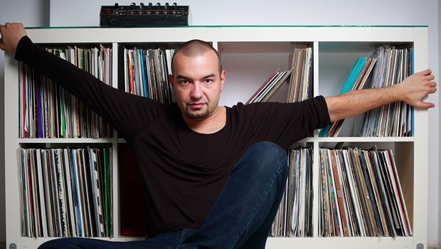

KiNK: Broadcasting from the concrete towers of Bulgaria


The announcement that Bulgarian producer KiNK AKA Strahil Velchev had a debut long player on the horizon was greeted with its fair share of excitement; an unfailingly distinct producer who mixes his rich, warm house sounds with the darker shades of techno. He’d originally intended the album to reflect his profile as a dancefloor producer. In the end though, Under Destruction became a much more experimental, difficult and somewhat cerebral exploration of the post-Soviet era dancefloor culture from which he’d emerged, than even Velchev might have expected.
Cities like London, Detroit and Berlin all have their own history and mythology that informed the development of their electronic music culture; early illegal parties in abandoned warehouses, the re-appropriation of desolate spaces and transforming them into havens of subculture, and the empty spaces representing freedom and liberation as opposed to urban decay. Similarly, Velchev’s hometown of Sofia, the capital and largest city of Bulgaria, has its own little-told story.
If electronic music is an artform defined by technology, then Bulgaria has its own very particular roots. The narrative begins with the visit of Bulgarian dictator Todor Zhivkov to Japan in the late 70s, where he was amazed by the country’s technological advancements. Driven to act immediately upon returning home, he established Bulgaria as a key developer of the computer industry across Eastern Europe, under the COMECON trade network that had been established between the Soviet Union and its Eastern Bloc allies back in 1949.
This led to the extraordinary situation where the modest socialist country was supplying at its peak 40 percent of the computers in the Eastern Bloc, the industry employing 300,000 workers and generating the equivalent of US$13.3 billion a year. The eventual demise of the USSR and Eastern Bloc socialism left behind an army of highly-skilled engineers and IT scientists, as well as a generation of children with access to the ‘Pravetz 82’, the first computer produced on a mass scale under the socialist industry; essentially a hacked and reproduced Apple II system.
With the economic turmoil and uncertainty that accompanied the fall of the Iron Curtain, dialup internet was the means through which Bulgarian youngsters were now able to connect with the outside world, inevitably connecting eventually with the dance culture that was on the rise throughout the world in the 90s, and reproducing the music in the same way their engineer parents ‘backwards engineered’ the Apple II systems they were recreating. Early Detroit techno and UK jungle were filtered through a South East mentality and given its own gritty spin.
This was the environment in that KiNK grew up in, and Under Destruction itself was produced in the concrete blocks of Sofia’s Zone B5; with Velchev steering away from the ‘functional dancefloor’ album he originally intended to make, which would have reflected his impressive success as a house and techno producer a little more closely. He knew he had a concept on his hands that was a little more cerebral, and he ended up partnering with Stefan Goldmann from the Berlin-based Macro Recordings to help him tell his story.
Goldmann paints the album’s picture in a fascinating essay A Sofia Story; detailing how Bulgaria’s post-socialist techno scene remained during the 90s, “pre-Easyjet and visa-free travel”, as a lifestyle that was imported via crackly MP3 recordings from the “distant utopia East of the border”; with a scene that developed even more on the on the “fringes of access” than the industrial ruins of Berlin.
“Not in the centers of dance music with their record shops… equipment stores full of blinking lights and expensive toys for boys. Vinyl was prohibitively expensive, simply beyond reach. Techno’s real digital natives are not based in Detroit, Berlin or London, but in Varna, Kiev, Bukarest, Skopje, Novosibirsk…”
KiNK talked with Data Transmission so we could find out little bit more about the concept behind Under Destruction, before its eventual release on May 5th.
At what point did the concept for Under Destruction begin to form in your head?
The original idea came a couple of years ago to make an album. I was planning to do something more functional for a bigger dance label, but I had no real ideas. I was making music, but it was nothing spectacular. And suddenly, at that point I had already a couple of interesting hardware boxes. I was playing around with these little music machines, I was just jamming and I had these recording sessions, and I thought wow, I have a very specific sound in the identity of using only these couple of boxes that I had. So I did a lot of jams with the hardware that I had at the time, and I decided actually, this can be the source material for the album. And then the idea changed. First of all it was just the music, and this album is the result of many hours of just live recording with a couple of sythesizers, and then when I started to edit and select recordings of all these hours. I finalised a lot of tracks out of it, and then started to think about I could present it, how to name it. So first was the music, and later concept of how to present it.
And there were things I didn’t even think of when I was creating the music. The environment in which I recorded the album, it was so important, but I didn’t realise that while I was making it. I live in a specific neighbourhood in Sofia, and the surroundings everywhere around me you see these big blocks, which are very mechanical, very futuristic in a way.
As you grow older, you begin to realise the influence of surroundings on your music.
It’s a story of my town, it’s a story of my neighbourhood, it’s a story of a political situation I’ve grown up in. When I was a kid, before my teenage years it was still a communist country, and when I found electronic music it was just after the change from communism to democracy. So it definitely affected my way of living, and of course my way of making music.
And as I mentioned the limitations of the technology I was using; it’s a cliché, but it’s totally true that limitations can be creative, and can inspire you to think in a specific direction, to solve specific problems that you never meet when you have enough tools for expression. Most of the music I had made before then was in a computer, and you know that nowadays the computers are so powerful. Modern software offers such flexible platforms; there are basically no limitations and you can do absolutely everything. And of course this is nice, but sometimes this can be distracting and confusing. When you have all the possibilities in the world, how do you focus on one? When you have limited tools, you just have to find solutions to help you be more creative. This is amazing. With this new approach I was discovering new horizons.
You mentioned that you’d initially planned a more functional album; this was perhaps what I was expecting, so Under Destruction came as a surprise.
It was a surprise for me as well. But I’ve always been interesting in experimental music as well, not only music with function. When I had this material, I was not really scared to show it, and I thought that the format as an album was a really good option. I’d had the desire earlier to experiment, but it was not that easy to establish myself internationally as a producer. Right now though, I feel strong enough to take risks, stronger than before. So now is a good time to do it.
My goal was to make something more interesting, and in the first listen it might be a shock to listeners. But if you look at the back catalogue of artists like Aphex Twin or Autechre, their stuff was very musical in the beginning; and suddenly it become more and more abstract. These are artists who were searching for new forms of expression, and over time their music became more and more complex. Perhaps those later works, they wouldn’t have been accepted without the previous works that were more accessible. So I didn’t plan that way of evolution with my music, but it happens. And I’m excited about it. It doesn’t mean I want to move away from the club scene, but I think the more influential electronic acts, they always search for something.
It was not a planned project, it was inspiration that came from something else. In my case, it was first the equipment that I used, and secondly the environment that I created it in. For a couple of months before I decided to do the record with Macro Recordings, I was talking to different friends and DJs and sending them the music. And there were quite controversial reactions. Some of them really, really loved it, while some of them didn’t really find anything in it for themselves. So I’m happy to see approval from fans now it is nearing release.
If you think about the KINK sound in terms of what you hear in your club records, it’s a mixture of those warm house sounds, intertwined with the darker techno elements as well. Listening to the album, those contrasts are still there.
Absolutely. Everything is a little harsher, but I can explain that. The past couple of years, house music is the new rock music, and some genres of this sound, they became very clean in their production. When I first got excited about house and techno music many years ago, I got into that music because it sounded different, it sounded like nothing else compared to the pop music on the radio. Nowadays, when I listen to a big house record, sometimes this sounds less experimental or adventurous than a pop record from Beyonce or Justin Timberland. And I think it’s our duty to change that. House and techno artists used to be open to discovery. What I liked about electronic music, firstly with house and techno and then later when I listened to music from back in the 50s and 60s; this music still sounds futuristic. Not like the future we imagined, but the future that never happened. That’s something similar that I try and achieve with my music, I want my music to live in a parallel reality. Somewhere in a future that will never come.
When did the decision come to partner with Macro Recordings to help you tell the story?
First of all, I am good friends with Stefan for 10 years now, and he is probably the first real electronic music recording artist that I met, so I view him as a mentor to me as an artist. For this project, the doors of the label were always open, but it took me a while to decide which label I wanted to work with for this project. I had a couple of other options in terms of which labels I was going to release it with, there were several big labels who wanted to release it regardless of the sound. So I had to make a decision that was not so easy. For example, Macro is not quite as popular as some of the other labels, so I had to think about the positive and negative sides of doing this record with a more boutique label. It took me a while to decide, but right now I’m happy with the choice. Even before the album has been released, I can see the positive fruits of that decision. First of all, I am good at expressing myself with sound, but Stefan also helped me translate these ideas into words. This is very important, because if I have an idea but I don’t know how to explain that idea to the audience, then 50 percent of the magic is lost.
How do you plan to communicate the concept of the album? Many might download it off Beatport as opposed to buying on vinyl; it doesn’t leave as much room for expression.
We try to cover all the possible formats, and we are looking for a different type of audience. However, art has not only one meaning, but several meanings. We don’t try to reach only those who want to think deeply about the concept, we also those who will just be interested in the club tracks. The music itself should have sonic value in and of itself, for those who would just like to download the album without artwork or reading about what stands behind it. Otherwise, it becomes a very silly form of modern art; like painting two dots on a canvas, and then writing a book with an explanation of what that means, or otherwise you can’t enjoy the picture. I want to give something extra with the concept behind it, but also the music itself should be strong enough to lead without any explanation. I hope it is [laughs].
Looking to catch KiNK in the flesh? He’ll be performing live at this years Edge Of the Lake Festival for those of you lucky enough to be in Switzerland on 27-29th June! Click here for more information and tickets